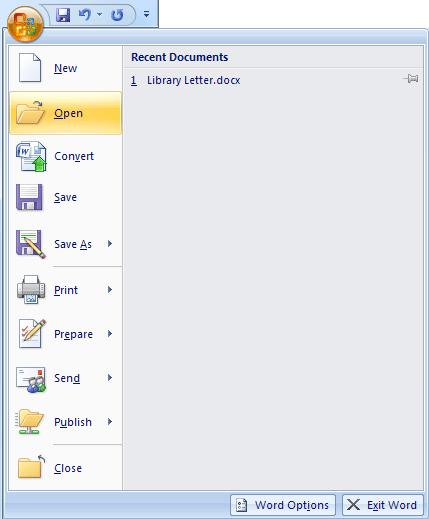
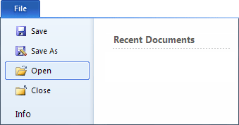
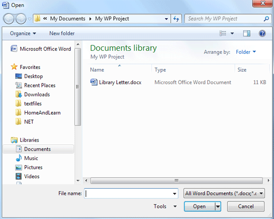
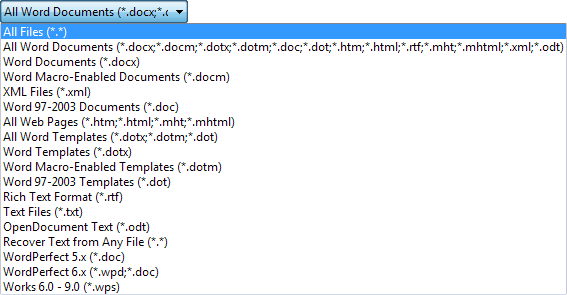
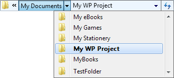
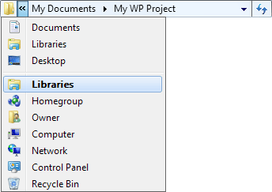
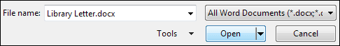

Free
computer Tutorials
|
Free
computer Tutorials
|
|
 home home |
|
|||||
Microsoft Word 2007 to 2010
Opening Microsoft Word DocumentsWe'll shortly add an address to the top of our Library Complaint letter. Before we do that, we'll learn how to open a file. After all, you might have closed down Microsoft Word, or your computer might have crashed. The result being that you no longer have your library letter loaded into Word. So here's how to open a file you have saved, and want to work on again.
In Word 2007, click the round Office button in the top left of Microsoft Word:  In Word 2010, you need to click on the File tab in the top left of Word:  If you see your file under the Recent Documents heading, you can simply click there to open it. However, if it's not on the list, click the Open item on the menu: The Open dialogue box appears, and looks like the image below:  The Open dialogue box looks very similar to the Save As dialogue box. Notice, though, that the File name text box is blank. If you can't see your document in the Documents Library section, you can click where it says All Word Documents. You'll then see a list of file types that can be opened with Microsoft Word:  This is more or less the same list you saw with the Save As dialogue box, under Save as Type. So if you don't see your file displayed, remember to display this list. But the File Name text box is empty because no file has been selected. A file is selected from the larger white area in the middle. Clicking on the file once with the left hand mouse button will select a file. In the image above, the document we want is displayed. But if it's not there, you can use the area at the top to search other folders. Click the My Documents item to see another drop down list:  The list shows you all the folders you have in your My Documents folder (this gets shortened to just Documents in Windows 7). Select a folder to move inside of it. You can see more areas on your computer by clicking the double arrows
just to the left of My Documents, in the image above. You'll then see
another list:  Again, clicking an item on the list takes you to that location. Have a play about with them, and watch how that dialogue box changes. To get back to where you where, you can either use the drop down lists above, or click the arrow buttons just to the left of the lists: Clicking the arrows just below the word Open above will take you either back one folder, or forward one folder. If you get totally lost, just click the Cancel button at the bottom of the Open dialogue box, then start again. To open a file, though, select it by clicking the file once with your
left mouse button. Its name will then appear in the File Name at the
bottom. Once it does, click the Open button. 
OK, now that you know how to open a file, we can start adding the address to our letter.
Add an Address to a Letter --> <--Back to the Word Contents Page View all our Home Study Computer Courses
|
||||||
|